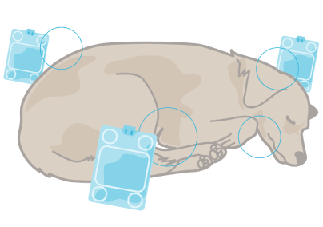
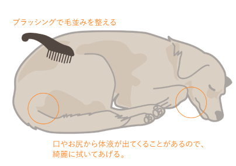

- ホーム
- 引取供養
引取供養のご案内
-
お迎え
-
合同火葬
-
合同供養
9,350円〜
- ご⾃宅にお伺いをしてお引き取りさせていただきます。
- 合同⽕葬を執り行わせていただき永代供養となります。
[所要時間30分〜]
- 自宅訪問
- 合同火葬
- 合同埋葬
- 永代供養
プランの特徴
- 時間や費用を抑えたい方向けとなります。
- 他家のペットちゃん合同火葬となります。
- 提携先の寺院に合同埋葬となります。
最初にしてあげること
-
1
適切な姿勢に
手足が硬直してしまう前に関節をもみほぐすようにしながら優しく胸の方に折り曲げ、目や口をそっと閉じてあげてください。
-

2
安置場所をつくる
ペットの体に合わせた段ボールに毛布やバスタオルを敷きます。段ボールの下にはペットシートやビニールを敷いてください。
-

3
ご遺体を冷やす
保冷剤や氷で頭やお腹のあたりから充分に冷やしてください。夏場などはエアコンをなるべく低めに設定し遺体を安置ください。
-

4
身体を綺麗に
少し湿らせたタオル等で体を拭いてあげてください。目や口を閉じてあげブラッシングなどで毛並みを整えてあげましょう。
用意するもの
-
タオルやガーゼ
-
毛布やバスタオル
-
ペットシートやビニール
-
保冷剤・氷
ペットのご安置方法
-
1
ペットを適切な姿勢にしてあげる
1
ペットを適切な姿勢にしてあげる
動物の死後硬直は手足から始まります。
硬直してしまう前に関節をもみほぐすようにしながら、優しく胸の方に折り曲げてあげてください。
また、目や口が開いているときはそっと閉じてあげてください。 -
2
ペットを安置する場所をつくる
2
ペットを安置する場所をつくる
ペットの体の大きさに合わせた段ボールなどの箱をご用意いただき、毛布やバスタオルを敷きます。
段ボールの下にはペットシートやビニールを敷いてください。 -
3
ペットのご遺体を冷やす
3
ペットのご遺体を冷やす
保冷剤や氷でご遺体を冷やしてください。頭やお腹のあたりから充分に冷やしてください。
夏場などはエアコンをなるべく低めに設定した上で、遺体を安置ください。 -
4
ペットの身体を綺麗にしてあげる
4
ペットの身体を綺麗にしてあげる
少し湿らせたタオル等で体を綺麗に拭いてあげてください。
口やお尻から体液が出ることがありますが、自然な事なので綺麗に拭いてあげてください。
目や口を閉じてあげ、ブラッシングなどで毛並みを整えてあげましょう。 -
5
ペットとのお別れ・お通夜・セレモニーなど行ってください
5
ペットとのお別れ・お通夜・セレモニーなど行ってください
生前に好きだった食べ物とお水をお口元に置き、たくさんのありがとうを胸に天国で安らかに過ごすことを祈りましょう。
お通夜は貴方の思う形で最後を一緒にお過ごしください。
引取供養の流れ
1
お問い合わせ
お電話かメールでご連絡ください。
お問い合わせの際にペットの大きさやご訪問の希望日時をお伝えください。
どうしたらいいかわからない場合でも、しっかりとご説明させていただきますので、お気軽にご相談ください。
2
ご訪問
ご遺体をお引取りさせていただきます。
ご予約をいただいたお時間にスタッフがお伺いしてお引取りさせていただきます。
ご訪問までゆっくりとお別れをしてあげてください。
大阪
- 大阪市（北区・都島区・福島区・此花区・中央区・西区・港区・大正区・天王寺区・浪速区・西淀川区・淀川区・東淀川区・東成区・生野区・旭区・城東区・鶴見区・阿倍野区・住之江区・住吉区・東住吉区・平野区・西成区）
- 堺市（堺区・中区・東区・西区・南区・北区・美原区）
- 高槻市
- 茨木市
- 箕面市
- 島本町
- 豊能町
- 能勢町
- 枚方市
- 交野市
- 池田市
- 寝屋川市
- 門真市
- 吹田市
- 摂津市
- 大東市
- 豊中市
- 東大阪市
- 守口市
- 四条畷市
- 柏原市
- 羽曳野市
- 藤井寺市
- 松原市
- 八尾市
- その他大阪府全域
京都
- 京都市
- 宇治市
- 八幡市
- 向日市
- 長岡京市
- 大山崎町
- 久御山町
- 京田辺市
- 城陽市
- 亀岡市
- 井手町
- 加茂町
- 木津町
- 精華町
- 山城町
- その他京都府全域
兵庫
- 神戸市
- 芦屋市
- 尼崎市
- 西宮市
- 伊丹市
- 猪名川町
- 川西市
- 宝塚市
- 明石市
- 播磨町
- 稲美町
- 加古川市
- 三田市
- 三木市
- 小野市
- 姫路市
- 高砂市
- 加東市
- 西脇市
- 多可町
- 加西市
- 篠山町
- その他兵庫県全域
滋賀
- 大津市
- 栗東市
- 守山市
- 草津市
- その他滋賀県全域
奈良
- 奈良市
- 生駒市
- 大和郡山市
- 橿原市
- 香芝市
- 葛城市
- 桜井市
- 天理市
- 安堵町
- 斑鳩町
- 王寺町
- 河合町
- 川西町
- 上牧町
- 広陵町
- 三郷町
- 田原本町
- 三宅町
- 大和高田市
- 平群町
- その他奈良県全域
和歌山
- 和歌山市
- 海南市
- 橋本市
- 紀の川市
- 岩出市
- 伊都郡かつらぎ町
- 有田市
- 御坊市
- 高野町
- 九度山町
- 海草郡
- 紀美野町
- 伊都郡
- 九度山町
- 伊都郡
- 高野町
- 有田郡
- 湯浅町
- 有田郡
- 広川町
- 有田郡
- 有田川町
- 日高郡美浜町
- 日高郡由良町
- 日高郡印南町
- 日高郡日高川町
- 日高郡日高町
- 日高郡みなべ町
- その他和歌山県全域
3
合同火葬
当院の固定炉で合同火葬をさせていただきます。
他家のペットと合同火葬となります。
4
証明書発行
火葬証明書を郵送でお届けします。
大切に保管をお願いいたします。
5
永代供養
幸豐寺 一心堂に納骨
ペット専用納骨堂 一心堂にお骨の一部を納骨して永代供養いたします。
6
合同埋葬
極楽寺に埋葬
残骨は極楽寺に合同埋葬となります。
各種クレジットカードを
ご利用いただけます
電波の受信状況によりご使用いただけない場合がございます
お客様の声
-
H.I様（亀岡市）
本日フォトフレーム頂戴しました。お急ぎ頂き感謝しております。
携帯の中にはハナの画像は入っておりますが写真が飾ってあるといつでも会えますので嬉しいです。
ありがとうございました。
毎日暑い日が続きます。お気をつけてお過ごしください。 -
S.J様（草津市）
先日は、愛猫の最後の別れのお手伝いをしていただき大変感謝しております。
亡骸をお渡ししてからの1日が悲しみのピークになりました。泣いてばかりいましたが、誠実なこころみたす様の対応できっと大切に扱って下さっていると思って信じてまちました。
翌日小さな可愛い指の骨が入ったカプセルを大切に持ってきていただきお帰り！と抱きしめました。 この瞬間を一生忘れることはありません。ありがとうございました！ -
S.H様（生駒市）
心のこもったフォトフレームが無事に届きました。
お骨のそばに飾ったお花が不思議と揺れて、母が何気にポストへ行くと届いていた様です。すごく神秘的で側にいる事を感じます。
また、思い出広場も拝見いたしました。同じ日に旅立った天使たちと仲良くはしゃいでいる事と思います。本当にありがとうございました。 -
F.T様（堺市）
先日は、心温まるお見送りをして頂きありがとうございましたm(_ _)m
無事に天国に旅立つ事が出来て感謝しています。
こころみたす様との出会いがあり本当に良かったと思っています。
関西全域の信頼と実績で
大切なご家族をお見送りいたします。
大阪・京都・滋賀・兵庫・奈良・和歌山を中心に関西一円で訪問火葬・引取供養を行なっているこころみたす ペット思い出セレモニーと申します。
1級動物葬祭ディレクターの岡田・森川をはじめ、経験豊富なスタッフが多数在籍しておりますので、
お電話でのご相談からご供養まで、ご要望に合わせたご対応を柔軟にご対応させていただきます。
お困りのことや分からないことはなんでもサポートさせていただきますのでご安心ください。
1級動物葬祭ディレクター岡田 侑也
森川 美紀
大阪・京都・滋賀・兵庫・奈良・和歌山を中心に関西一円で訪問火葬・引取供養を行なっているこころみたす ペット思い出セレモニーと申します。
1級動物葬祭ディレクターの岡田・森川をはじめ、経験豊富なスタッフが多数在籍しておりますので、
お電話でのご相談からご供養まで、ご要望に合わせたご対応を柔軟にご対応させていただきます。
お困りのことや分からないことはなんでもサポートさせていただきますのでご安心ください。
よくあるご質問
-
ご質問 予約の電話は何時でもいいのですか?
回答 24時間いつでもお電話ください。
専門のスタッフが丁寧にご説明いたします。
-
ご質問 火葬時間はどのくらいかかりますか?
回答 ペットの大きさをお申し付け下さい。
火葬にかかる時間はペットの種類、大きさによって異なります。
小動物や猫・小型犬は2時間前後、大型犬で3時間前後が目安となります。 -
ご質問 ペットを火葬するためにかかる料金は決まっていますか?
回答 はい、ご安心ください。
ペット葬にかかる費用はすべて決まっておりますので追加料金が発生することはございません。詳しくはお電話でご確認ください。
-
ご質問 骨壺はどうすればいいですか?
回答1 ご自宅でご供養していただく。
回答2 幸豐寺一心堂へ個別納骨していただく。
引取供養料金
[税込]
-
500g以下
¥9,350
-
1kg以下
¥12,100
-
2kg以下
¥15,400
-
5kg以下
¥18,700
-
10kg以下
¥22,000
-
15kg以下
¥27,500
-
20kg以下
¥33,000
-
25kg以下
¥37,400
-
30kg以下
¥42,900
-
35kg以下
¥49,500
-
40kg以下
¥56,100
-
45kg以下
¥62,700
-
50kg以下
¥69,300
-
55kg以下
ご相談ください
各種クレジットカードを
ご利用いただけます
電波の受信状況によりご使用いただけない場合がございます